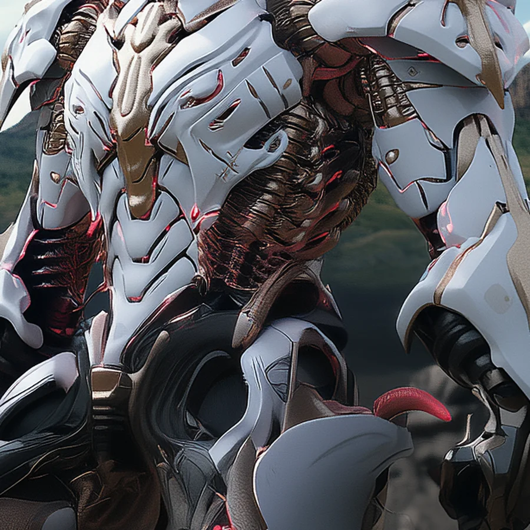

©
©

Asharo
Abyssal Accord · Elite
Asharo never stays where it lands. The Warp Jumper flickers across the battlefield and leaves a slow, draining shock in every enemy it passes. The Accord gives no orders, and Asharo has never needed any.